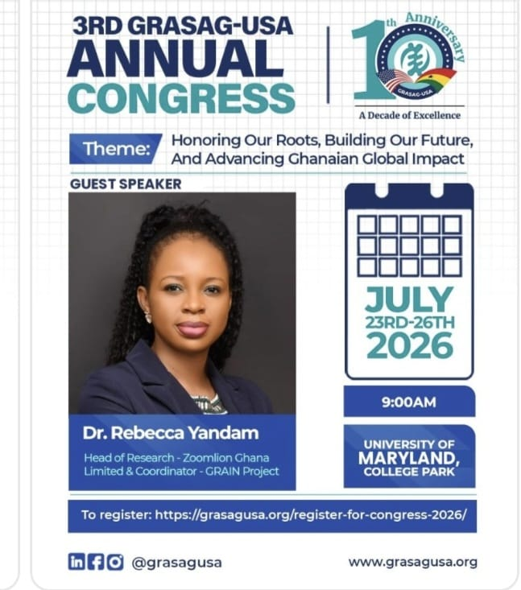

3rd GRASAG-USA Annual Congress
A congress programme listing a GRAIN Project guest speaker.
Past event · Programme listing
Honoring our roots, building our future
The 3rd GRASAG-USA Annual Congress was listed for 23–26 July 2026 at the University of Maryland, College Park. Its theme was “Honoring Our Roots, Building Our Future, And Advancing Ghanaian Global Impact.”
The supplied poster names Dr Rebecca Yandam as a guest speaker and identifies her as Head of Research at Zoomlion Ghana Limited and Coordinator of the GRAIN Project. A recap of her presentation can be added after the speaker or organizer verifies the details.
Back to events